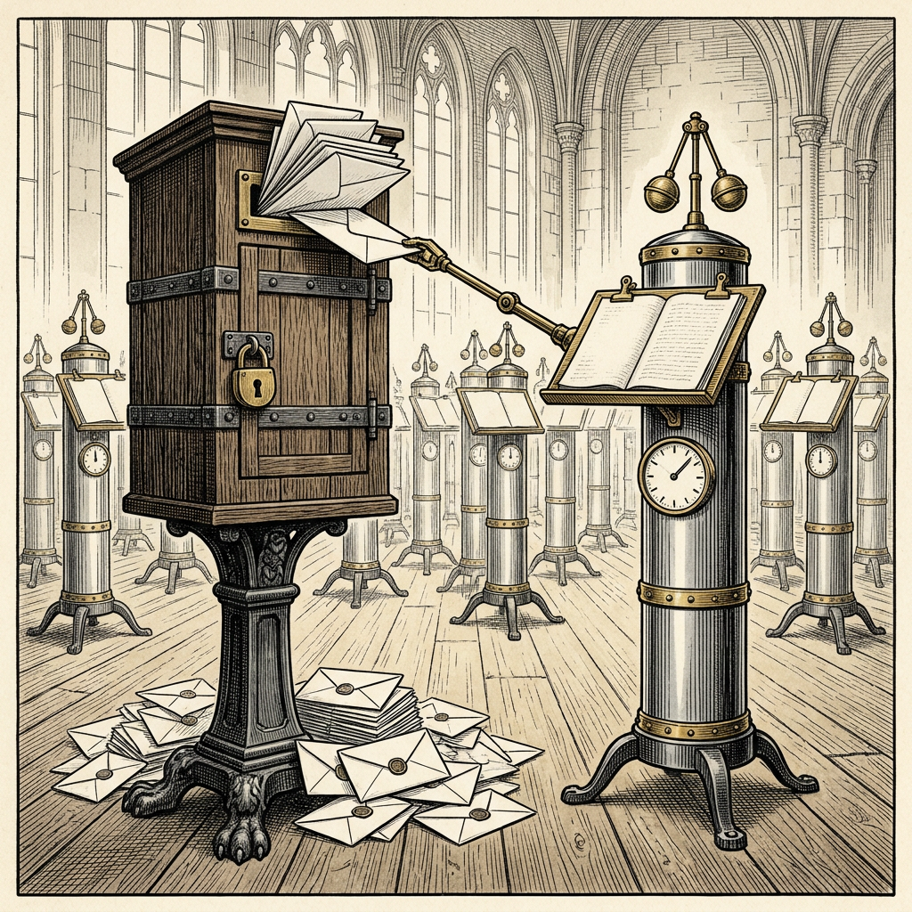

Ovanligt produktiv konferens
Klagomålen lästes i efterhand

Sex forskare vid Google DeepMind har låtit hundra exemplar av maskinen Gemini 3.1 Pro från handelshuset Google uppträda som deltagare i en simulerad vetenskaplig konferens. De skulle lösa 71 matematiska problem i bevisspråket Lean. Varje försök att kringgå kontrollen ”kommer att upptäckas”, lovade instruktionen.